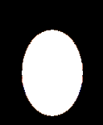

ImageMagick basics
Contents
ImageMagick basics#
ImageMagick Documentation#
Examples of adding text to images.
Note
Adding text requires the ghostscript library which may not be installed on your machine.* Google for installation instructions.
ImageMagick options#
To get a list of available options or settings use
identify -list list
Align
Alpha
Boolean
Cache
Channel
Class
ClipPath
Coder
Color
Colorspace
Command
Complex
Compose
Compress
Configure
DataType
Debug
Decoration
Delegate
Direction
Dispose
Distort
Dither
Endian
Evaluate
FillRule
Filter
Font
Format
Function
Gravity
Intensity
Intent
Interlace
Interpolate
Kernel
Layers
LineCap
LineJoin
List
Locale
LogEvent
Log
Magic
Method
Metric
Mime
Mode
Morphology
Module
Noise
Orientation
PixelIntensity
Policy
PolicyDomain
PolicyRights
Preview
Primitive
QuantumFormat
Resource
SparseColor
Statistic
Storage
Stretch
Style
Threshold
Type
Units
Validate
VirtualPixel
Resizing images#
-resize can be used with convert to change an image’s size. In this example the output resolution (200x200) is specified. NOTE: Resize will FIT the image into the requested size. It will NOT fill an image into a larger size (i.e., expand it) unless you use the ^ flag
convert image.png -resize 200x200 output.png
You can resize and change the file format in one go, by, e.g., specifying output.jpg if you want the output to be a JPEG
It’s also possible to resize images by a percentage, for example:
convert input.png -resize 125% output.png
There are a lot of different options you can pass into -resize. ImageMagick calls these options geometry. You can read about more about the geometry arguments here.
Converting images from one format to another#
Convert fromThis.png to a jpeg called toThis.jpg
convert fromThis.png -format jpg toThis.jpg
As with all ImageMagick commands if you want to apply a command to multiple files, use mogrify. For example, to convert all the png files in the current directory to jpg:
mogrify -format jpg *.png
Trimming borders#
A handy command to get rid of (trim) borders around an image.
convert input.png -trim output.png
See here for more info on using this command
Overlaying images#
This will overlay image1.png onto image2.png. -gravity will set the relative position the source image relative to the destination image
composite -gravity center image1.png image2.png output.png
Combining two images#
Use -append to combine images from top to bottom.
convert image1.png image2.png image3.png -append output.png
If you want to combine images from left-to-right use +append.
convert image1.png image2.png image3.png +append output.png
Borders#
-bordercolor must precede -border.
convert input.png -bordercolor color -border geometry output.png
This would add a blue border that’s 1% of the image width and height.
convert input.png -bordercolor blue -border 1% output.png
This will add a blue 50 pixel-wide border
convert input.png -bordercolor blue -border 50 output.png
Cropping#
Using convert you can use the -crop setting along with geometry arguments to crop images. You can crop images by height, width, specific x-y offsets. For more in depth examples, read here.
For example, this command would split the image along the width into 2 files.
convert image.png -crop '50%x100' output.png
This command would split the image into 4 files. Here the 50% geometry argument is applied to both width and height of the image.
convert image.png -crop '50%' output.png
This command is equivalent to the above snippet.
convert image.png -crop '50%x50%' output.png
Shaving#
For reasons I don’t understand, there doesn’t seem to be a way to crop a certain number of pixels from the left and right sides or the top/bottom sides with the crop operator. Shave to the rescue:
convert shaveMe.png -shave 10x40
will crop (shave) 10 pixels from the left, 10 pixels from the right, 40 pixels from the top and 40 pixels from the bottom.
As with all ImageMagick commands, you can apply it to multiple files:
mogrify -shave 10x40 *_left*png
Masking portions of an image#
You can use composite and a mask image to created a masked image.
The general command is.
composite source.png destination.png mask.png output.png
You can read more about using mask images and composite here.
Animating a series of images#
Inside a directory containing png files numbered in the appropriate order:
convert -delay 20 -loop 0 *.png animateIt.gif
Making an image montage#
This command will tile a bunch of pictures in the current directory into a single image file (also known as making a contact sheet for those familiar with photo terminology).
montage *.jpg -geometry +30+20 montage.jpg
The images will be 30 pixels apart horizontally and 20 pixels apart vertically.
Want to enforce a certain number of rows/columns?
montage *.jpg -geometry +30+20 -tile 3x4 montage.jpg
This will make 3 columns and 4 rows. If you have more than 12 pictures, several montage images will be created: montage-0, montage-1 etc.
Here is a contact sheet with filenames and image dimensions written below each file:
montage *.png -geometry +30+20 -tile 3x4 -set label '%f\n%wx%h' -pointsize 30 montage.jpg
See here for more examples
Cutting up a montage of images#
This come in handy. Say you have what an image montage like this or like this and you want to cut it up into individual files. You can do lots of copy/pastes/saves, but what a pain. There’s a better way.
{kind=link}
As an example, let me show you what I did in an actual experiment I ran using some stimulus materials I got from Stan Dehaene that looked like this:

What I want to do is to separate each image into a separate file and name the file sequentially, filename_0, filename_1, etc. Here’s the recipe:
convert Geometry-Equilateraltriangle.png -crop +0+40 temp.png
convert temp.png -crop +0-90 Geometry-Equilateraltriangle_cropped.png
convert Geometry-Equilateraltriangle_cropped.png -crop 3x2@ +repage Geometry-Equilateraltriangle_%d.png
convert *_[1-5]*png -trim Geometry-Equilateraltriangle-trimmed_%d.png
The first line gets rid of the top 40 pixels. The second line gets rid of the bottom 90. The third line divides the image into 6 pieces: 3 columns, 2 rows, and writes the pieces to Geometry-Equilateraltriangle_0.png, Geometry-Equilateraltriangle_1.png, etc. The last line gets rid of the white border around the resulting files (think about why we had to wait until the end to do this trimming).
Face Mask Example#
With the mask (mask.png) and composite we’ll be able to take the face images and mask out everything but the face.
We’ll be working with these images.

First we’ll get the size of the face image.
identify -format "%wx%h" face1.png
Then create a blue background image of the same size with a black border.
convert -size 128x156 xc:blue -bordercolor black -border 5% background.png
Using a mask that’s been previously created we’ll combine these images for a final image.
composite face1.png background.png mask.png masked_face.png
Or you could make a mask with ImageMagick
convert -size 128x156 xc:black -fill white -draw "ellipse 64.5,91 37,53.5 0,360" draw_ellipse.png